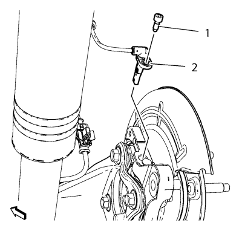
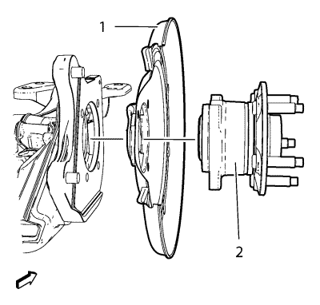

Sustitución del cubo y cojinete de la rueda trasera -- Disco de freno
Herramientas especiales
EN 45059 Kit de goniómetro de par de apriete
Si desea informarse sobre herramientas regionales equivalentes, consultar Herramientas especiales .
Procedimiento de desmontaje
- Elevar el vehículo y soportarlo de manera adecuada. Consultar Elevación y soporte en alto del vehículo .
- Desmonte la rueda del vehículo. Consultar Desmontaje y montaje de la rueda y el neumático .
- Sin desconectar el tubo flexible del freno hidráulico, desmonte y apoye la pinza de freno trasera y el soporte como un conjunto, y desmonte el motor del freno trasero. Consultar Sustitución del rotor de freno trasero .

Atención: Sujete las pinzas de freno con alambre mecánico fuerte o equivalente cuando se separen del montaje y aún esté conectado el tubo flexible de freno hidráulico. Si no se sujetan las pinzas de esta manera, el tubo flexible de freno tendrá que soportar el peso de las pinzas, lo que puede provocar que se dañe el tubo flexible de freno y esto, a su vez, puede provocar una fuga de líquido de frenos.
- Desmonte el perno del sensor de velocidad de la rueda (1).
- Desmonte el sensor de velocidad de la rueda (2).

- Desmonte y deseche los pernos de montaje del cojinete/cubo de la rueda delantera (1).

- Desmonte el conjunto cojinete/cubo de la rueda (1) y la chapa de recubrimiento de frenos trasera (2) del eje trasero.
Procedimiento de montaje
- Coloque la chapa de recubrimiento de frenos trasera (2) y el conjunto cojinete/cubo de la rueda (1) en el eje trasero.
Precaución:Consulte Precaución con las fijaciones en la sección Prólogo.
- Monte los NUEVOS pernos de montaje del cojinete/cubo de la rueda (1) y apriételos a 50 N·m (37 lib. pulg.) + 40° usando el juego EN 45059.
- Monte el sensor de velocidad de la rueda (2).
- Monte el tornillo del sensor de velocidad de la rueda (1) y apriételo hasta 6 N·m (54 lib. pulg.). Apriete los pernos de forma uniforme, de forma cruzada.
- Monte el rotor de freno e instale la pinza y el soporte como un conjunto. Consultar Sustitución del rotor de freno trasero .
- Monte el conjunto de neumático y llanta. Consultar Desmontaje y montaje de la rueda y el neumático .
- Desmonte el soporte y baje el vehículo.
| © Copyright Chevrolet. Reservados todos los derechos |